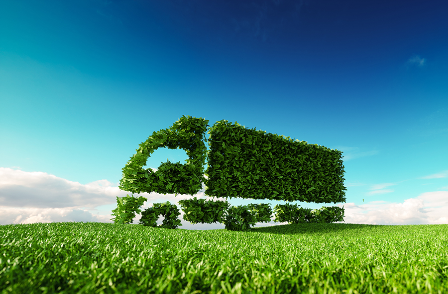
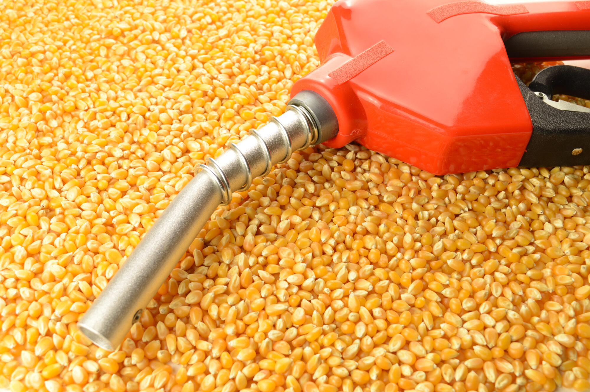
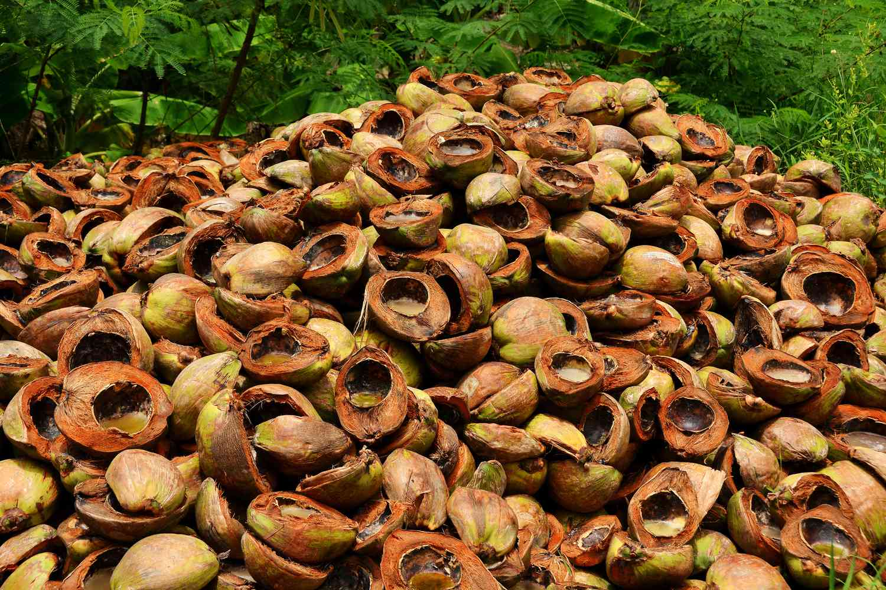
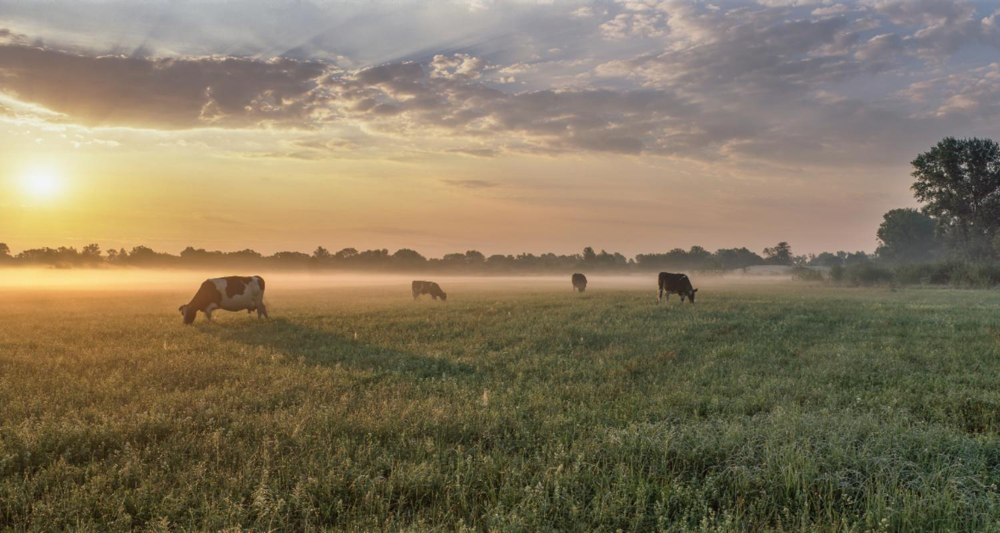
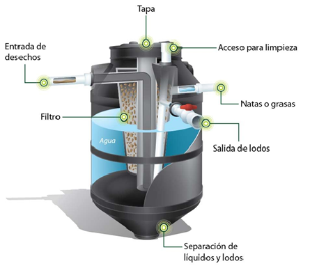

¿Qué son los biocombustibles?
Te explicamos qué son los biocombustibles y cómo se obtiene cada uno. Además, las ventajas que presentan y tipos de biocombustibles.
Son combustibles que se obtienen a partir de recursos naturales o residuos orgánicos, ya sean de origen animal o vegetal (biomasa), y que tienen como principal ventaja su capacidad para reducir las emisiones contaminantes
¿Cómo se obtienen los biocombustibles?
Para obtenerlos es necesario transformar biomasa en combustibles a través de procesos mecánicos, termoquímicos y biológicos.
Este proceso forma parte de la denominada transición energética que marca el rumbo hacia un nuevo modelo energético que pretende dejar atrás la energía procedente de combustibles fósiles -como el carbón o el petróleo- , por energía limpia y sostenible -como los biocombustibles, que provienen de fuentes orgánicas
¿Qué es la biomasa?
La biomasa es una fuente de energía renovable que proviene de la materia orgánica, como residuos vegetales, residuos agrícolas, restos de madera y otros desechos biodegradables. Esta materia orgánica puede ser utilizada como combustible para generar calor, electricidad y combustibles líquidos.
Se considera que la biomasa es una alternativa más sostenible y limpia a los combustibles fósiles, ya que reduce las emisiones de gases de efecto invernadero y ayuda a combatir el cambio climático.
Tipos de Biomasa
Existen varios tipos de biomasa que se utilizan como fuentes de energía renovable. Estos son los principales:
- Residuos forestales: Incluye los restos de árboles y ramas caídas, residuos de la industria maderera y desechos de la gestión de bosques. Estos residuos pueden ser utilizados como combustible para generar calor o electricidad.
- Cultivos energéticos: Son cultivos agrícolas específicamente cultivados para la producción de biomasa. Ejemplos comunes incluyen la caña de azúcar, el maíz, el trigo y la remolacha azucarera, que se utilizan para producir biocombustibles líquidos como el bioetanol.
- Residuos agrícolas: Incluye los residuos de cultivos agrícolas como paja, cáscaras de arroz, bagazo de caña de azúcar y residuos de cosechas. Estos residuos pueden ser utilizados como combustible o para la producción de biogás mediante procesos de fermentación.
- Residuos de la industria agroalimentaria: Incluye los residuos de la producción de alimentos, como los desechos de la industria láctea, la cáscara de frutas y verduras, y los residuos de la producción de aceite vegetal. Estos residuos pueden ser utilizados para la generación de energía a través de la biomasa.
- Residuos sólidos urbanos: Incluye los residuos orgánicos presentes en la basura generada por los hogares y las industrias. Estos residuos pueden ser procesados y utilizados como biomasa para la producción de biogás o combustible sólido.
Estos son solo algunos ejemplos de los tipos de biomasa utilizados en la producción de energía renovable. Cada tipo tiene sus propias características y aplicaciones específicas, pero todos ellos contribuyen a reducir la dependencia de los combustibles fósiles y promover la sostenibilidad energética.
Tipos de Biocombustibles
Los biocombustibles pueden ser sólidos, líquidos o gaseosos. Los dos más extendidos en la actualidad son el bioetanol y el biodiesel, también llamados biocombustibles de primera generación. Se utilizan sobre todo para motores de coche y camiones, y cumplen los criterios de sostenibilidad y reducción de huella de carbono pautados por la Directiva Europea de Energías Renovables.
- El Bioetanol es un alcohol que generalmente se produce utilizando como materia prima la caña de azúcar los cereales y betabel (remolacha de azúcar). Este combustible representa cerca del 90% de la producción total de biocombustibles. Es el más usado en el transporte y puede producirse en grandes cantidades a partir de la caña de azúcar, el trigo y el maíz, entre otros. Es líquido y fácil de producir. En comparación con el diésel, reduce hasta 90% las emisiones de CO2.
- Biodiesel: Este combustible que puede utilizarse en lugar del diésel convencional se produce a partir de aceites vegetales o animales, se obtiene sobre todo de la palma aceitera y la soja. Supone casi el 10% de la producción total de biocombustibles, Tiene la ventaja de ser líquido y está disponible en grandes cantidades. Se puede usar con diésel. En comparación con el estándar, se reduce CO2 hasta en un 66%.
Pero a pesar de ser los más usados, no son los únicos. Aunque producidos y usados en menor medida, también contamos con los biocombustibles de segunda generación o avanzados.
- Biogás: Este tipo de combustible es gaseoso y se obtiene a partir de residuos biodegradables que pueden ser purificados hasta parecerse al gas natural. El modo más sostenible de obtenerlo es usar materia orgánica en descomposición. Está formado por la misma molécula que el gas natural, pero es renovable. Si ambos se combinan, se reducen hasta en un 20% las emisiones de CO2 con respecto al diésel.
- Biopropano: Se trata de un tipo de biogás que se obtiene a partir de desechos orgánicos y aceites vegetales y que presenta las mismas características que el gas propano, pero siendo un 80% más sostenible.
- Biometano: Otro tipo de biogás que, en su caso, se caracteriza porque logra alcanzar una proporción de metano que ronda el 95 %, un grado de pureza que permite su incorporación a la red gasista, mezclado con el gas natural convencional.
Existen también biocombustibles de tercera generación que se extraen de algas y plantas acuáticas. Entre ellos destaca uno:
- Biohidrógeno: Este biocombustible aún no se ha comercializado, pero existen estudios e investigaciones que prueban su factibilidad para su uso en el futuro próximo
Construcción de una Planta de Biogás
La construcción de una planta de biogás es un proceso que involucra varias etapas y requiere de conocimientos técnicos específicos. A continuación, te presento una explicación generalizada del proceso, desde la preparación de los materiales hasta la obtención del biogás:
- 1. Recolección y Preparación de la Biomasa:
- Selección de la materia prima: Se seleccionan los residuos orgánicos adecuados, como estiércol, residuos de cultivos, residuos de alimentos, etc. Es importante que la biomasa tenga un alto contenido de materia orgánica y humedad.
- Pretratamiento: La biomasa se tritura y mezcla con agua para formar una suspensión homogénea, facilitando así la acción de las bacterias.
- 2. Digestión anaeróbica:
- Biodigestor: La mezcla se introduce en un biodigestor, que puede ser de diferentes tipos (batch, continuo, de flujo ascendente o descendente).
- Acción bacteriana: En ausencia de oxígeno, las bacterias anaeróbicas descomponen la materia orgánica, produciendo biogás ( principalmente metano y dióxido de carbono) y un digerido sólido (biofertilizante).
- 3. Separación del Biogás:
- Tanque de almacenamiento: El biogás producido se almacena en un tanque, donde se separa de los líquidos y sólidos.
- Purificación (opcional): En algunos casos, el biogás puede requerir purificación para eliminar impurezas y aumentar su poder calorífico.
- 4. Uso del Biogás:
- Combustión: El biogás se quema en motores de combustión interna para generar electricidad o calor.
- Cocción: Se utiliza como combustible para cocinar.
- Calefacción: Se emplea para calentar espacios o agua.
Ejemplos de usos comunes del biogás:
- Producción de electricidad: Muchas plantas de biogás generan electricidad que puede ser inyectada a la red eléctrica o utilizada para autoconsumo.
- Calefacción de invernaderos: El biogás se utiliza para calentar invernaderos, permitiendo la producción agrícola durante todo el año.
- Cocción en hogares rurales: En zonas rurales, el biogás se emplea como combustible para cocinar, mejorando la calidad del aire interior y reduciendo la dependencia de combustibles fósiles.
- Producción de biofertilizantes: El digerido sólido resultante del proceso de digestión anaeróbica es un excelente fertilizante orgánico, rico en nutrientes.
Factores para considerar en la construcción de una planta de biogás:
- Tamaño de la planta: Depende de la cantidad de biomasa disponible y de la demanda de biogás.
- Tipo de biodigestor: La elección del biodigestor depende de factores como el clima, la disponibilidad de materiales y el tipo de biomasa.
- Tratamiento de los efluentes: Es importante tratar adecuadamente los efluentes líquidos y sólidos para evitar la contaminación del medio ambiente.